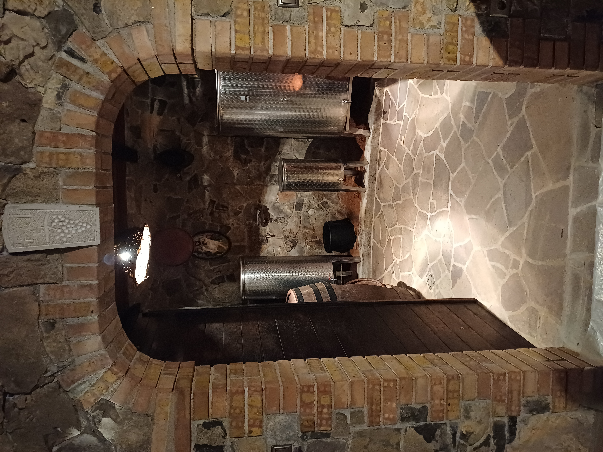
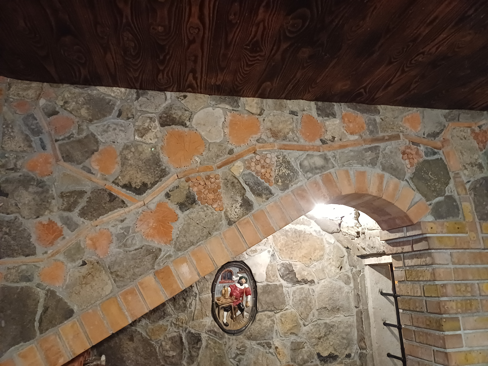
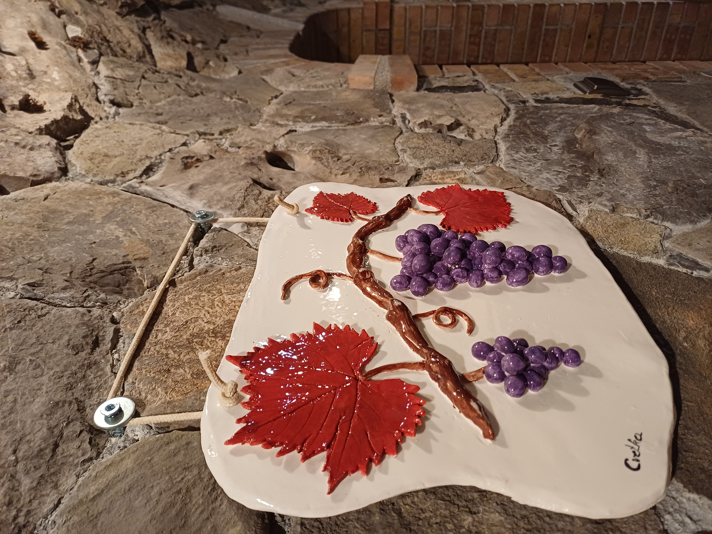

Kraška klasika
Teran
Globok. Kraški. Samosvoj.
»Kras daje teranu karakter,
generacije pa dušo.«
Kras je pokrajina kamna, burje in rdeče zemlje.
Trta tu ne raste zlahka — prav zato pa daje grozdju
značaj, ki ga drugje ni mogoče poustvariti.
Med kraškimi gmajnami in suhim kamnitim svetom
trta išče svojo pot. Sonce, burja in terra rossa
skupaj ustvarjajo pogoje, iz katerih nastajajo vina
z izrazitim, pristnim kraškim značajem.
Naše vino je odsev tega prostora.
Ni ustvarjeno samo iz grozdja, temveč tudi iz zemlje,
podnebja in tradicije, ki se na Krasu prenaša iz roda v rod.
Kras v kozarcu.
Naša zgodba se je začela na Krasu, kjer je bilo vinogradništvo skozi generacije del družinskega življenja. Korenine našega vinarstva segajo v 19. stoletje, ko so naši predniki obdelovali vinograde in skrbeli za vino. Znanje o trti in vinu se je prenašalo iz roda v rod. Vsaka generacija je nadaljevala delo prejšnje in mu dodala nekaj svojega. Danes nadaljujemo isto zgodbo – povezani z zemljo, iz katere prihajamo, in s tradicijo, ki nam je bila predana. Generacije se menjajo. Ljubezen do vina ostaja.
Vsako vino ima svoj karakter. Vsako leto svojo zgodbo.
Globok. Kraški. Samosvoj.
Teran je vino, ki je tesno povezano s kraško zemljo. Njegova globoka rubinasto rdeča barva, izrazita svežina in prepoznaven karakter so del njegove identitete.
V njem se prepletajo značilnosti okolja, v katerem nastaja – rdeča kraška zemlja, kamen, burja in sonce. Vsak letnik pa doda svojo zgodbo in svoj karakter.
Naš Teran želimo predstaviti takšnega, kot ga poznamo mi – kraškega, pristnega in povezanega z domačo zemljo ter tradicijo.
Leta 1981 smo zgradili novo vinsko klet. Postala je prostor,
kjer se je naše vinogradništvo razvijalo in kjer je vino dobivalo svoj čas.
Skozi leta se je spreminjala tudi klet. Okoli leta 2010 smo jo prenovili
in ji dali novo podobo, pri tem pa ohranili njen značaj in namen.
Danes je klet prostor, kjer vino počiva, zori in čaka na svoj trenutek.
Od grozdja do vina. Od generacije do generacije.



Na Krasu ima Teran posebno mesto. Ni le vino, temveč del življenja, ki je skozi generacije povezoval človeka, zemljo in dom.
V kraškem izročilu so se ohranile številne pripovedi o Teranu in njegovem mestu v življenju domačinov. Te zgodbe pričajo o kulturnem pomenu vina na Krasu, ne pa o njegovih zdravstvenih učinkih.
Te zgodbe so del kraškega kulturnega izročila, ki se je prenašalo iz roda v rod – ob delu v vinogradu, ob domači mizi in v kleti. Opisujemo zgodovino in tradicijo, ne zdravstvenih učinkov alkohola.
Teran
Teran nosi značaj svojega kraja. Rdeča kraška zemlja, kamen, burja in sonce ustvarjajo pogoje, v katerih nastaja vino z izrazitim karakterjem.
Prav zaradi svoje posebnosti je Teran skozi zgodovino postal eden od prepoznavnih simbolov Krasa. Z njim so povezane številne zgodbe o življenju na kraški zemlji, o delu naših prednikov in o odnosu do vina, ki ni bilo nikoli samo pijača, temveč del doma in vsakdana.
Od nekdaj do danes
Danes na Teran gledamo z novim znanjem, vendar stare zgodbe ostajajo del njegove identitete.
Spoštujemo tisto, kar so nam pripovedovali naši predniki, hkrati pa želimo bolje razumeti tudi to, kar o Teranu in njegovih naravnih sestavinah vemo danes.
Ker vino ni samo tisto, kar natočimo v kozarec.
Je tisto, kar so ustvarjale prejšnje generacije,
kar ustvarjamo danes
in kar bomo predali prihodnjim generacijam.
Kras v zemlji.
Zgodba v vinu.
Iz roda v rod.